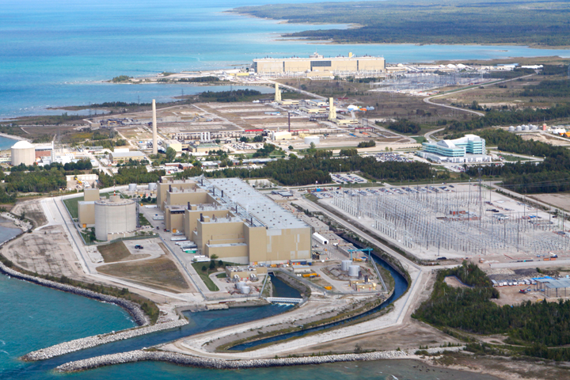

五大湖边的加拿大布鲁斯核电站
人民网讯 加拿大安大略电力公司3日宣布，将继续推动在美国和加拿大交界的休伦湖边填埋核电站放射性废料的工作。这家公司称，“实在找不到更好的地方埋这些东西”。
休伦湖是北美五大湖中的第三个，为美国和加拿大的“界湖”，属两国共有。加拿大环境和气候变化部将在今年晚些时候就此事作出最后决定。休伦湖加拿大一侧建有布鲁斯核电站。
安大略电力公司选中的填埋地点离布鲁斯核电站较近，这座核电站有8座核反应堆。这家公司希望通过深埋近700米的方式，处理一些中低放射性的核废料，如工作服和废弃设备仪器等。
电力公司介绍，填埋层位于一处石灰岩结构，这里在过去的4.5亿年间一直保持稳定，且填埋点距离湖边约1.6公里，不可能污染湖水。不过，被填埋物品携带的放射性可能会存续上千年。
除了临湖的深层填埋点，电力公司还曾在安大略省北部和南部选择了两地备选，但它们距布鲁斯核电站较远，在长途运送核废料时可能会产生环境问题，而且建设工期与成本大增。
美国民主党众议员基尔迪称，加拿大那么大，总能找到一个比休伦湖更好的地方永久填埋核废料。加拿大民间组织则认为，五大湖是4000万居民饮用水源，不应建设核废料填埋场。（高轶军）